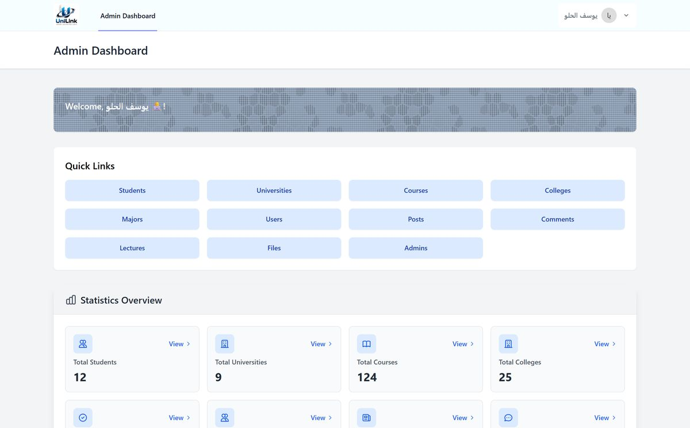

UniLink
University communication, in one place.تواصلُ الجامعة في مكانٍ واحد.
- problemالمشكلة
- Student communication is scattered across email, social media groups and separate learning systems.يتوزّع تواصل طلاب الجامعة بين البريد الإلكتروني ومجموعات التواصل الاجتماعي وأنظمة التعلّم المنفصلة.
- solutionالحل
- One platform where students join their courses, post, ask, discuss and get notified, with an admin dashboard for universities, colleges, courses and content.منصّة واحدة يدخل منها الطالب إلى مساقاته، فينشر ويسأل ويتفاعل ويتابع إشعاراته، مع لوحة تحكّم لإدارة الجامعات والكليات والمساقات والمحتوى.
- detailميزة لافتة
- Each course has its own chat where students can reply to a specific message, so the discussion stays easy to follow as it grows.لكل مساق محادثة خاصة يستطيع فيها الطالب الردّ على رسالة بعينها، فيبقى النقاش سهل المتابعة مهما كثرت الرسائل.
- my roleدوري
- I handled all the development on a team of five, from the database and application logic to the interface and the tests.توليتُ برمجة المشروع كاملةً ضمن فريق من خمسة، من قاعدة البيانات ومنطق التطبيق إلى الواجهات والاختبارات.
- challengeالتحدي
- Testing. I'd never written tests before, so I learned it during the project with help from a more experienced developer.الاختبارات؛ لم تكن لديّ خبرة سابقة في كتابتها، فتعلّمتُها أثناء المشروع بمساعدة مطوّر أكثر خبرة.
LaravelPHPMySQLBladeBootstrapPHPUnit